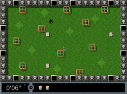
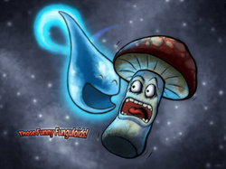
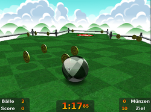
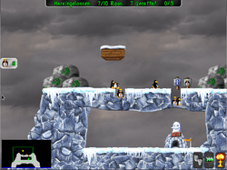
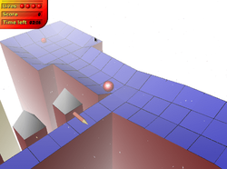

Geschicklichkeit
Zum Verständnis dieses Artikels sind folgende Seiten hilfreich:
Enigma¶

Enigma  ist ein Klon des bekannten Spiels Oxyd. Der Sinn des Spiels ist es, mit der Maus eine Kugel zu steuern und das nächste Level zu erreichen. Das Konzept ist außerordentlich kurzweilig, da das Spiel verschiedenste Elemente vereint. So gibt es Memory-Elemente (es müssen gleichfarbige Steine durch "Anstubsen" aufgedeckt werden), das typische Verschieben von Kisten wie in Sokoban und verschiedene Rätsel. Verschiedene Steine haben unterschiedliche Funktionen: manche sind nur Wände, andere zeigen Farben, die aufgedeckt werden müssen, wieder andere sind Spiegel für einen Laser...
ist ein Klon des bekannten Spiels Oxyd. Der Sinn des Spiels ist es, mit der Maus eine Kugel zu steuern und das nächste Level zu erreichen. Das Konzept ist außerordentlich kurzweilig, da das Spiel verschiedenste Elemente vereint. So gibt es Memory-Elemente (es müssen gleichfarbige Steine durch "Anstubsen" aufgedeckt werden), das typische Verschieben von Kisten wie in Sokoban und verschiedene Rätsel. Verschiedene Steine haben unterschiedliche Funktionen: manche sind nur Wände, andere zeigen Farben, die aufgedeckt werden müssen, wieder andere sind Spiegel für einen Laser...
Kurzbeschreibung: Mit der Maus eine Kugel durch verschiedene Level steuern, die darin enthaltene Aufgaben lösen und aufpassen, dass die Kugel nicht zerbricht.
Benötigtes Paket:
enigma (universe)
 mit apturl
mit apturl
Paketliste zum Kopieren:
sudo apt-get install enigma
sudo aptitude install enigma

Those Funny Funguloids¶
Those Funny Funguloids! erinnert an flOw, allerdings ist das Spieltempo erheblich rasanter. Kenner vermissen vielleicht ein wenig den meditativen Charakter des Originals, aber trotzdem ein netter Zeitvertreib für jung und alt.
Kurzbeschreibung: Pilze sammeln und reich werden. Aber Vorsicht: umherschwirrende Objekte können das Spiel jäh beenden...
Benötigtes Paket:
funguloids (universe, ab Ubuntu 13.10)
mit apturl
Paketliste zum Kopieren:
sudo apt-get install funguloids
sudo aptitude install funguloids

Neverball¶
Neverball ist ein Marble-Blast-Klon, der von Icculus entwickelt wurde.
Kurzbeschreibung: Mit der Maus einen Ball über eine Spielfläche steuern, alle Münzen einsammeln und darauf achten, dass der Ball nicht fällt ... Außerdem steckt im Spiel noch ein zweites: Neverputt, ein Minigolfspiel für bis zu vier Spieler.
Mehr Informationen gibt es im Artikel Neverball

Pingus¶
Kurzbeschreibung: Hilf den Pingus, ihre Expedition um die Welt zu bestehen, damit sie die Ursache für die Klimaerwärmung und die damit verbundene Zerstörung ihrer Heimat finden. Nutze ihre Spezialfähigkeiten.
Benötigtes Paket:
pingus (universe)
mit apturl
Paketliste zum Kopieren:
sudo apt-get install pingus
sudo aptitude install pingus

Trackballs¶
Trackballs ist ein Klon von Marble Madness.
Kurzbeschreibung: Einen Ball durch ein Labyrinth steuern, Gegenstände einsammeln und darauf achten, dass der Ball nicht herunter fällt.
Benötigte Pakete:
trackballs (universe)
trackballs-music (universe - sphärische Musik hören, während die Murmel mal wieder herunterfällt)
mit apturl
Paketliste zum Kopieren:
sudo apt-get install trackballs trackballs-music
sudo aptitude install trackballs trackballs-music
libsdl1.2debian-all (optional, bei einem "Segmentation Fault (SDL Parachute Deployed)")
mit apturl
Paketliste zum Kopieren:
sudo apt-get install libsdl1.2debian-all
sudo aptitude install libsdl1.2debian-all
- Erstellt mit Inyoka
-
 2004 – 2017 ubuntuusers.de • Einige Rechte vorbehalten
2004 – 2017 ubuntuusers.de • Einige Rechte vorbehalten
Lizenz • Kontakt • Datenschutz • Impressum • Serverstatus -
Serverhousing gespendet von